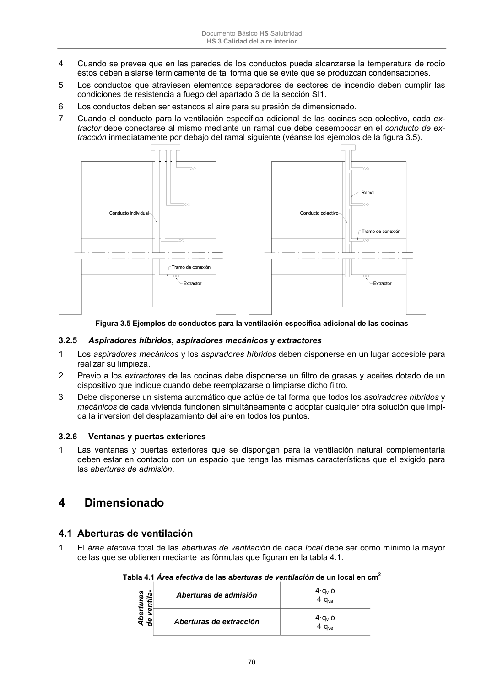

DB-HS · Página 70 · versión 2022-06-14
SHA256: 68df3caacc95f71aee2ec1ba7b2c65ae66155c21e3a8785521b8fdd4fd640d3b · página física 70 de 184 · métodos de encabezado
solo si están cotejados.
Formatos: Markdown · JSON de bloques · PDF p. 70 · imagen PNG
Documento Básico HS Salubridad HS 3 Calidad del aire interior 70 4 Cuando se prevea que en las paredes de los conductos pueda alcanzarse la temperatura de rocío éstos deben aislarse térmicamente de tal forma que se evite que se produzcan condensaciones. 5 Los conductos que atraviesen elementos separadores de sectores de incendio deben cumplir las condiciones de resistencia a fuego del apartado 3 de la sección SI1. 6 Los conductos deben ser estancos al aire para su presión de dimensionado. 7 Cuando el conducto para la ventilación específica adicional de las cocinas sea colectivo, cada ex- tractor debe conectarse al mismo mediante un ramal que debe desembocar en el conducto de ex- tracción inmediatamente por debajo del ramal siguiente (véanse los ejemplos de la figura 3.5). Figura 3.5 Ejemplos de conductos para la ventilación específica adicional de las cocinas 3.2.5 Aspiradores híbridos, aspiradores mecánicos y extractores 1 Los aspiradores mecánicos y los aspiradores híbridos deben disponerse en un lugar accesible para realizar su limpieza. 2 Previo a los extractores de las cocinas debe disponerse un filtro de grasas y aceites dotado de un dispositivo que indique cuando debe reemplazarse o limpiarse dicho filtro. 3 Debe disponerse un sistema automático que actúe de tal forma que todos los aspiradores híbridos y mecánicos de cada vivienda funcionen simultáneamente o adoptar cualquier otra solución que impi- da la inversión del desplazamiento del aire en todos los puntos. 3.2.6 Ventanas y puertas exteriores 1 Las ventanas y puertas exteriores que se dispongan para la ventilación natural complementaria deben estar en contacto con un espacio que tenga las mismas características que el exigido para las aberturas de admisión. 4 Dimensionado 4.1 Aberturas de ventilación 1 El área efectiva total de las aberturas de ventilación de cada local debe ser como mínimo la mayor de las que se obtienen mediante las fórmulas que figuran en la tabla 4.1. Tabla 4.1 Área efectiva de las aberturas de ventilación de un local en cm2 Aberturas de ventila- Aberturas de admisión 4·qv ó 4·qva Aberturas de extracción 4·qv ó 4·qve
